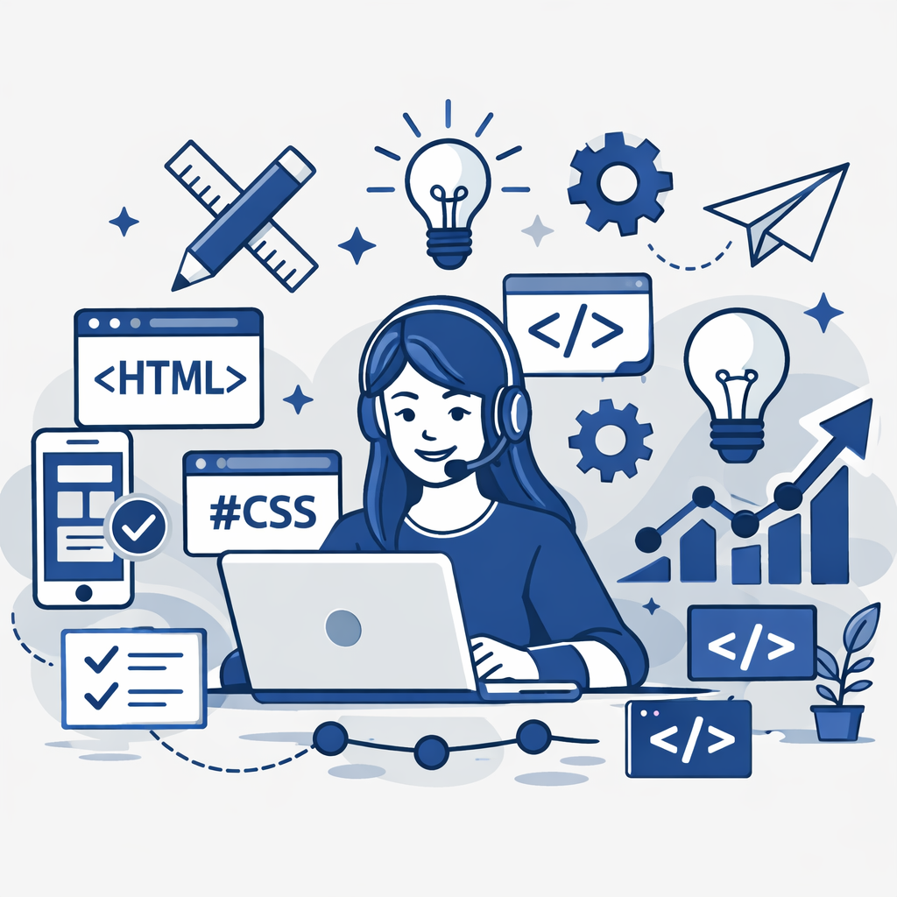
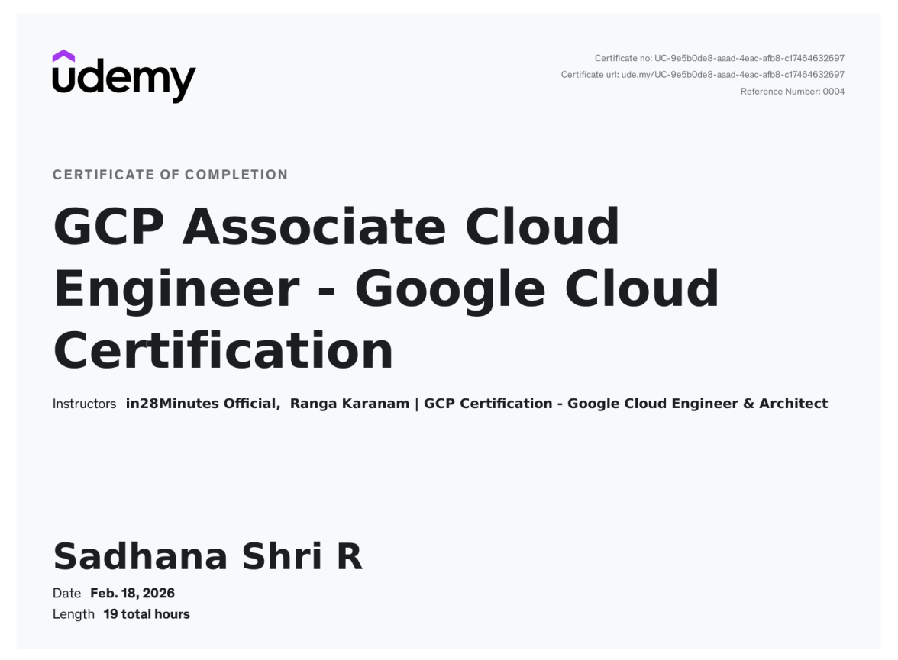
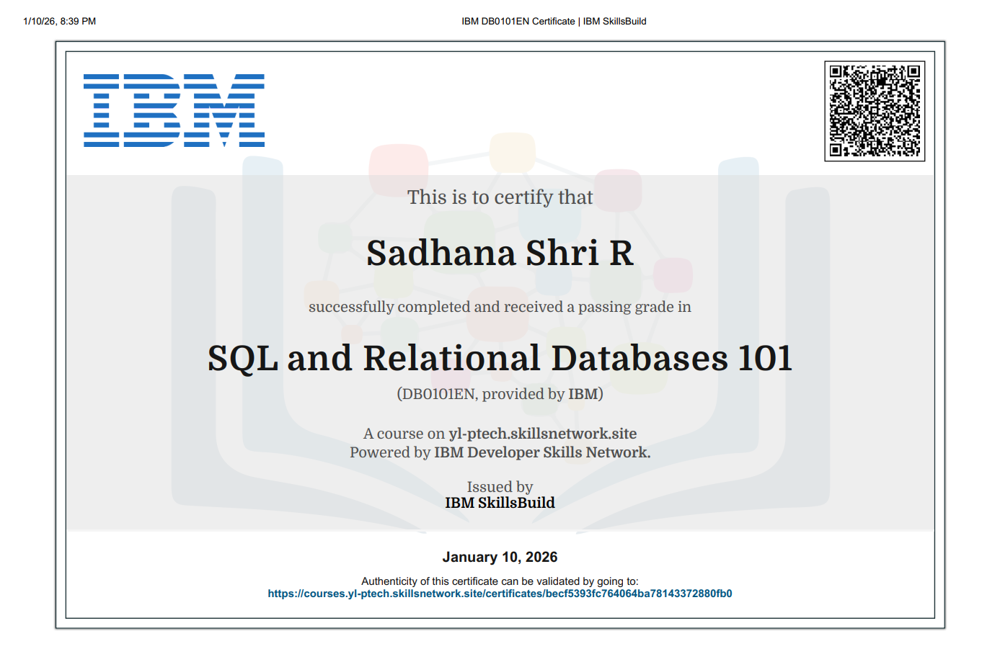

sadhanaraja2005@gmail.com
sadhanaraja2005@gmail.com
 https://www.linkedin.com/in/sadhana-shri-558916268?utm_source=share_via&utm_content=profile&utm_medium=member_android
https://www.linkedin.com/in/sadhana-shri-558916268?utm_source=share_via&utm_content=profile&utm_medium=member_android


Certified Associate Cloud Engineer by Google Cloud Platform with skills in deploying and managing cloud applications. Experienced in working with core GCP services, monitoring, and infrastructure management.
Completed a foundational course on SQL and relational databases, focusing on managing and querying structured data.Gained practical knowledge in writing SQL queries and understanding database concepts.

Developed an intelligent diagnostic system using Convolutional Neural Networks (CNNs) to accurately detect brain tumors from MRI scans and pneumonia from chest X-ray images. The model was trained on medical imaging datasets to identify patterns and anomalies, enabling faster and more reliable predictions. Designed a user-friendly web interface that allows users to upload medical images and receive real-time diagnostic results. The system focuses on improving early detection and supporting healthcare decision-making through AI-driven insights.
Python, JavaScript, HTML, CSS
Developed an AI-powered predictive system to assess the risk of cardiovascular disease (CVD) by analyzing critical health parameters such as age, cholesterol levels, blood pressure, heart rate, and lifestyle factors including smoking habits and diet. The model leverages machine learning techniques to identify patterns and provide early risk predictions, supporting preventive healthcare decisions. Built a scalable backend using Flask to handle data processing and model inference, and integrated a database system for efficient data storage and retrieval. Incorporated explainable AI techniques to enhance transparency, allowing users to understand how different factors contribute to predictions.
Python, Scikit-learn, TensorFlow, Flask, SQL, SHAP, LIME
sadhanaraja2005@gmail.com
https://www.linkedin.com/in/sadhana-shri-558916268?utm_source=share_via&utm_content=profile&utm_medium=member_android